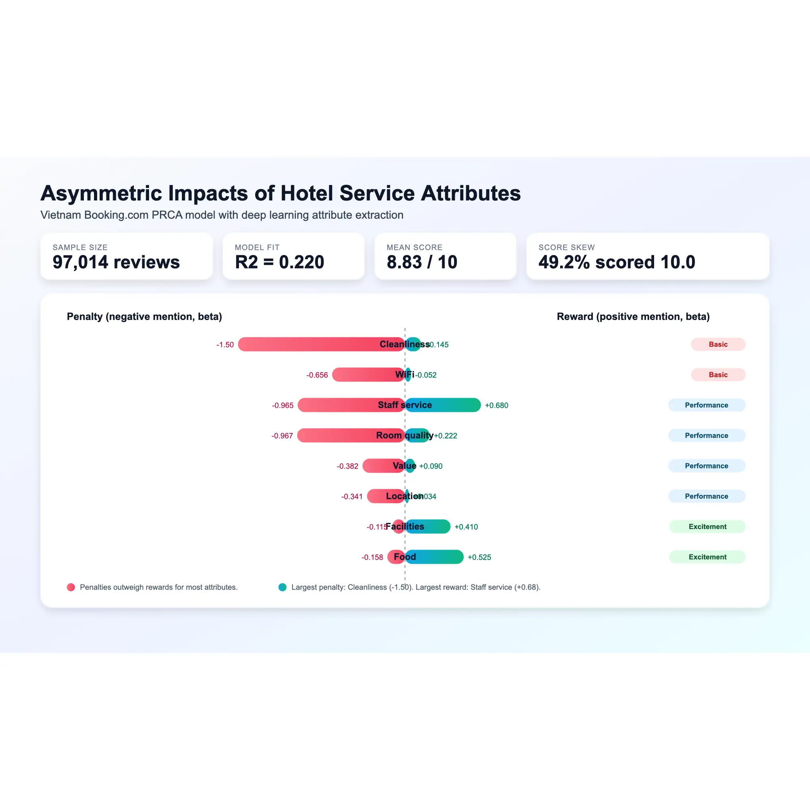
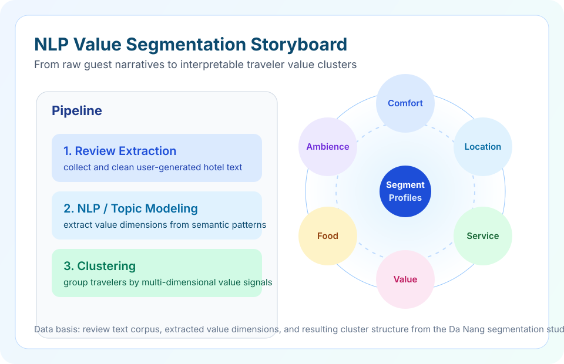
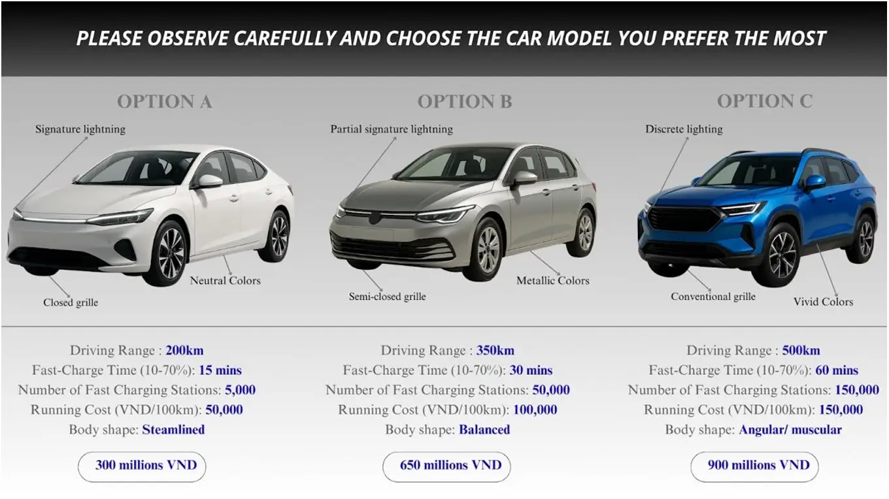
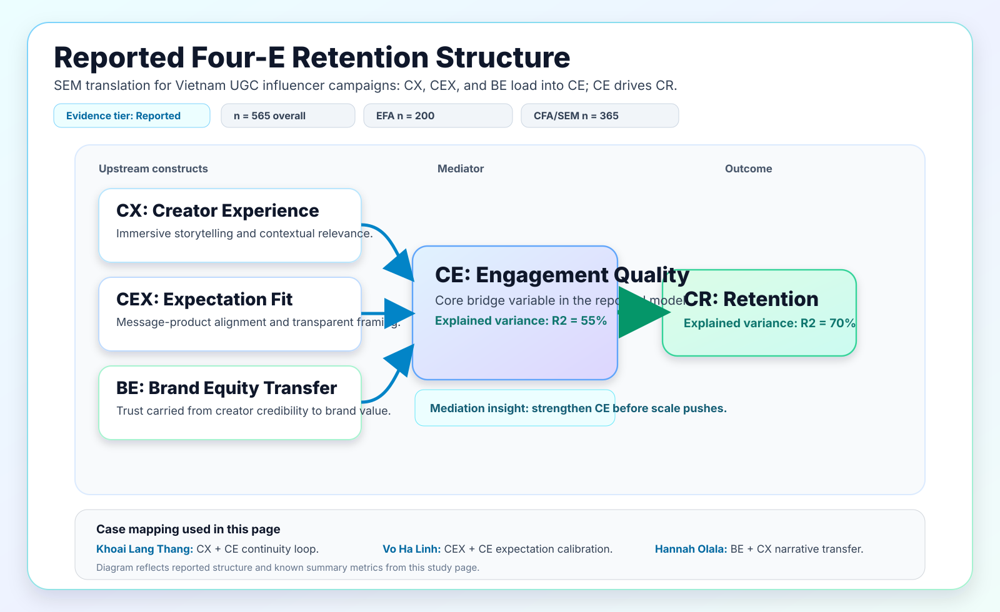
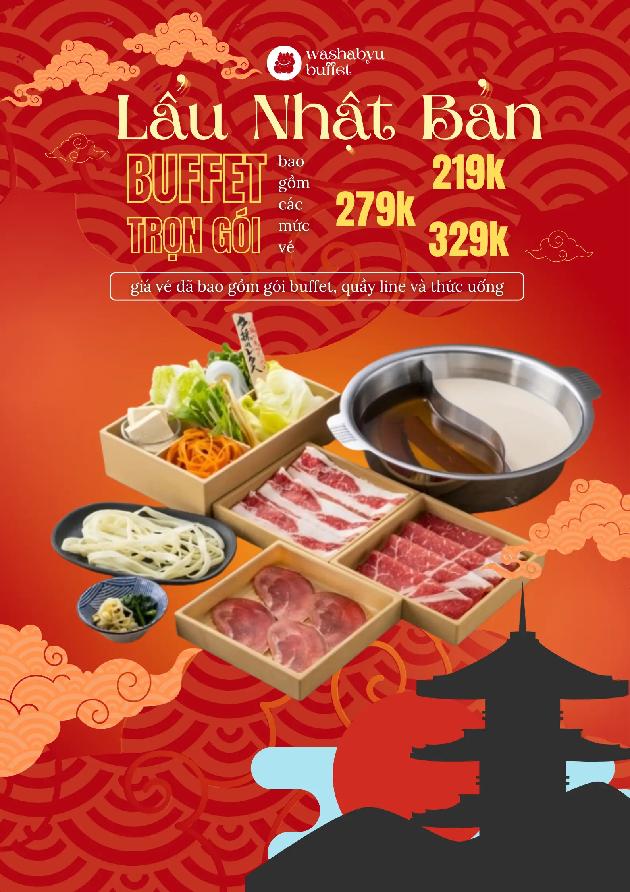
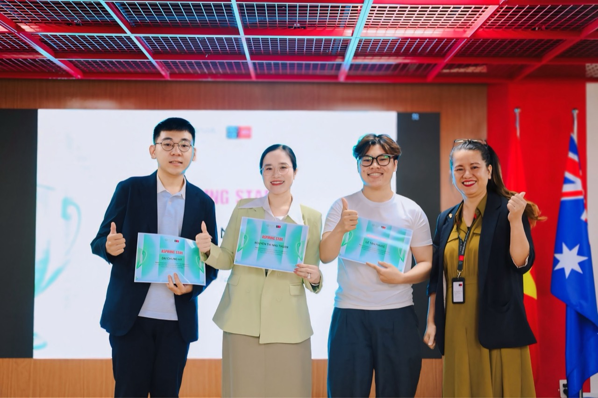

Research Archive
Market Research & Applied Analytics Projects
Eleven applied projects across hospitality segmentation, EV choice, policy acceptance, influencer retention, buffet nudging, nutrition, and organizational behavior. If you are reviewing this for hiring, start with EV choice, motorbike policy, hotel segmentation, and service work.
Evidence labels: These labels show how directly each claim is supported.
Last updated 20 Apr 2026
Topic Pages
Start with a cluster if you want a faster read.
Each topic page groups related studies, adds context for non-specialist reviewers, and links adjacent themes so the site reads like a structured portfolio instead of a flat project list.
Hospitality Analytics Research
Hotel segmentation, attribute asymmetry, and value frameworks for service teams.
MobilityMobility and Policy Research
EV choice trade-offs and transition-policy acceptance in Vietnam.
CreatorsCreator Economy Research
Retention, engagement, brand transfer, and virtual-influencer trust.
HealthHealth and Behavior Research
Diet quality, buffet nudging, and behavior-change contexts.
OrganizationsOrganizational Behavior Research
Ownership, participation, and co-created experience in institutional settings.
Research project list
Hospitality Analytics Research
Hotel segmentation, attribute asymmetry, and value frameworks.

Hotel Customer Segmentation from Aspect-Level Sentiment
Maps 10 hotel guest segments from 74,896 Booking.com review records in Da Nang.

Hotel Attribute Asymmetry in Vietnam
Shows which hotel attributes cause the biggest rating penalties when they fail.

Value FrameworkHotel Value Segmentation Framework
Conceptual translation layer that maps review text signals into functional, emotional, and social value actions.
Mobility and Policy Research
EV choice trade-offs and Hanoi motorbike phase-out acceptance.

EV Design vs. Range Trade-Offs in Vietnam
Tests how young Vietnamese consumers trade off EV design, range, price, and charging.
 CIEMB Policy
CIEMB Policy
Hanoi Motorbike Phase-Out Policy Acceptance
Acceptance rises when transit and financial support come before broad restrictions.
Creator Economy Research
UGC retention, brand transfer, virtual-influencer trust, and purchase intention.

Influencer StrategyInfluencer Retention, Engagement, and Brand Transfer on UGC Platforms
Shows how content experience, expectation fit, and brand transfer drive retention through engagement.
 EEEU Conference
EEEU Conference
Virtual Influencer Cues, Gen Z Trust, and Purchase Intention
Tests how virtual influencer cues shape Gen Z purchase intention and trust response.
Health and Behavior Research
Nutrition knowledge, diet quality, menu nudging, and food-decision contexts.

Behavioral EconomicsBuffet Menu Nudging and Choice Architecture
Healthy-first menu order lowered intended intake and reduced premium-tier selection.
 FCBEM 2025
FCBEM 2025
Nutrition Knowledge, Physical Activity, and Diet Quality
Identifies which knowledge and activity factors are most linked to better student diet quality.
Organizational Behavior Research
Psychological ownership and arts workshop co-creation.
Psychological Ownership in Vietnam Universities
Turns ownership research into practical actions for faculty, staff, and student teams.

Experiential ServicesArts Workshop Co-creation and Customer Interest
Shows how learning, social, and emotional value shape repeat workshop interest.
Need a quick summary?
Review the projects here, then jump back to the main portfolio for experience, skills, and credentials.